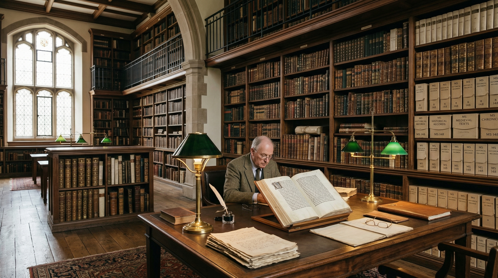

Current Holding
12,500+検索可能な資料タイトル数の参考値。

Knowledge Plaza は、学術アーカイブの保存、研究設計の伴走、公開プログラムの編集を通じて、問いが育つ環境そのものを整備する知識拠点です。静かな読解と共同探究が同じ場所で前進するための誌面と導線を整えています。
Current Holding
12,500+検索可能な資料タイトル数の参考値。
Active Researchers
480伴走・共同研究に関わる年間利用者の想定値。
Editorial Programs
34公開講座、展示、研究会の年間実施数の例。
12,500+
Archive Titles
480
Researchers
130+
Publications
34
Annual Programs
何を扱う場所か、誰が利用できるか、どの資料が公開されているかを、トップページの段階で明確に示します。研究の入口と、来館・閲覧・参加の導線をひと続きに整理しています。
Fields
歴史学 / 物質文化 / 図書館情報学 / 研究編集
Public Materials
公開資料目録 / 研究ノート / 年次報告書 / 読書会レジュメ
Visit Guide
来館閲覧 / 研究相談 / 展示見学 / 公開講座申込

Open Program
年間プログラム、ゲスト講演、読書会、実地見学をまとめて案内し、参加のハードルを下げます。
Knowledge Plaza は、資料保全と研究の高度化を同時に進めるために設立された学術拠点です。静かな読解と大胆な仮説形成が共存する場を目指しています。
散在する一次資料を検索可能な構造へ整理し、研究者の探索時間を大幅に短縮します。
歴史学、哲学、自然科学を横断し、問いの構造そのものを磨き上げます。
研究成果を教育機関、文化施設、企業と接続しながら社会実装へ展開します。
研究協働や取材依頼には、専任のキュレーションチームが目的に応じてご案内します。
Visitor Notes
一般来館、研究者利用、共同編集のいずれも、事前予約と資料区分の案内を分けて整備しています。
人文科学、自然科学、社会科学、情報科学を横断し、資料の公開からイベント運営までを一貫して支援します。
古代テキスト、言語学、宗教史、社会構造を中心に、資料批判を伴う研究を支援します。
理論枠組みの整理、文献レビュー、公開講義向けの編集を通じて探究の輪郭を整えます。
交易、金融、物流、産業史の資料を横断し、時代背景の読み解きを支えます。
Latest Notes And Reading Editions
Quantum Resonance
観測条件と絡み合い状態の揺らぎを、公開可能な研究ノート形式で整理。
The Digital Agora
アルゴリズム社会の徳倫理を、講義ノートと読書会用の抜粋で再編集。
Silk And Silver
元帳断片、交易地図、倉庫記録を束ねて再構築した海上交易史の記録集。